開發觀念、評估流程、開發策略、黃金定律
商圈劃分、零售立地類型、評估步驟、來客數、動線
飽和度、調查方法、範圍設定、調查紀錄表、流量調查
地心引力、三角窗、漏斗、Reilly、Huff、迴歸、類比
競合店調查、損益平衡點、五年損益、地圖插針法
通路與物流、設立 DC 的動機、五種物流中心型態
點任一張卡片可直接前往該段 · 按 O 看全部頁面 · 有 INTERACTIVE 標記的頁面可以和同學一起動手
今天學完商圈與立地的工具之後，最後再回來看看：你的直覺和分析結果一不一樣？
想一想：這四個地點的人潮，各是什麼時間、往哪個方向走？他們會停下來買飲料嗎？
從區域潛力一路評估到挖店、搶店的完整流程（下一頁）
商圈是顧客來源的「面」，立地是店舖所在的「點」
依賴位置帶來自然人潮的店，相對於靠商品力把顧客吸引過來的店
人潮的時間與方向，決定店該開在路的哪一側
同類型商店聚集成街，形成集客的磁場
交通建設與都市計畫，會讓商圈的重心轉移
提高市場佔有率
提高企業知名度
曝光率、吸引加盟
提高企業形象
保護獲利商店
鞏固陣地
收集區域消費情報
打擊對手
削減對手獲利空間
求發展、求生存
求收益
轉進策略
指一家零售店會光臨的顧客所來自的地理區域，也就是在這地理區域內的顧客很有可能會去該零售店購買產品或服務。
單獨的商店，與其他零售商沒有直接連結與集中管理
由零售商或商業機構妥善規劃與管理所形成
有些立地為單獨的商店，與其他零售商店沒有直接連結與集中管理決策的關係。
地點選擇較有彈性
（高能見度、高車流量等）
無法與其他零售商店共同分擔成本
（水電、燈光等）
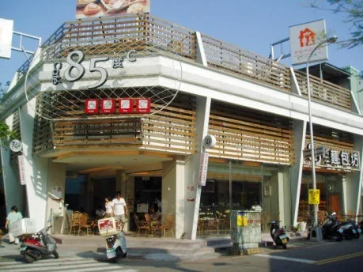
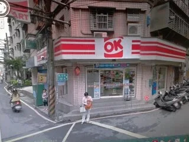
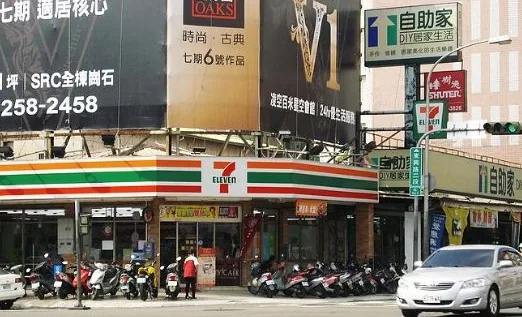
由一群零售商或是專門的商業機構經過妥善的規劃與管理所形成的立地型態。
| 類型 | 特徵 | 案例 |
|---|---|---|
| 獨立店 | 多位在車流量高、能見度高的區域，提供顧客便利性 | 便利超商、速食餐廳、藥妝店 |
| 店中店 | 零售商將商場內的櫃位及空間出租，讓其他零售商進駐，提高吸引力 | 百貨公司、綜合型量販店、購物中心 |
| 都會型 | 大多數人主要購物、休閒、娛樂的地方 | 臺北市西門町、高雄市三多商圈 |
| 社區型 | 服務社區住戶為主的零售業者 | 臺北市民生社區、高雄市尖美社區 |
| 辦公型 | 服務該區上班為主的人員，白天生意會比晚上好 | 臺北市民生東路、高雄市中正路 |
| 轉運型 | 因交通工具的轉運造成人潮流動率高，停留時間不長 | 各地區之火車站 |
| 校園型 | 顧客多為教職員生，寒暑假生意明顯差異 | 臺灣大學公館、成功大學勝利路及大學路 |
| 遊樂型 | 顧客多為遊客，生意有季節性之分 | 墾丁、日月潭 |
| 夜市型 | 顧客多為附近的居民，也有外來客，晚上生意會比白天好 | 臺北市士林夜市、高雄市瑞豐夜市 |
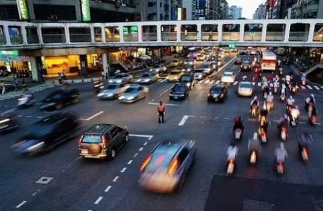
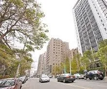
人口統計資料 Census
從政府的戶口及住宅普查，回答「這裡住了誰？」
地理資訊系統 Geographic Information System 把各種資料疊在地圖上，整合分析：
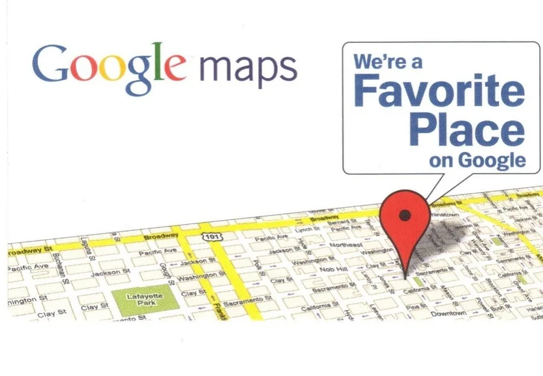
觀察、記錄、拍照、攝影…
直昇機（現在也可用空拍機、衛星地圖）
多種方法交叉比對，資料才可靠
第一商圈 m
第二商圈 m
步 行 分鐘
腳踏車 分鐘
汽機車 分鐘
河流、橋樑、大馬路、鐵道、地下道、天橋、大型工廠、軍事設施…
距離、商品力、販賣力、服務力…
✎ 空格可以直接在畫面上輸入：請同學依你家附近的商店，討論合理的距離與時間。
人口數、家庭戶數
戶量及成長率
年齡分析
家庭生命週期
所得收入
消費習性
使用交通工具
| 路線名稱 | 調查人 | 調查日期 | |||||||
| 道路寬度 | m | 安全島 | 有無 | 行人地下道 | 有無 | 行人天橋 | 有無 | ||
| 商店型態 | |||||||||
| 主要大型 機構單位 | 商店街 集客力 | 繁榮普通冷清 | |||||||
| 租或售 | 店址 | 連絡電話 | 連絡人 |
| 租售 | |||
| 租售 | |||
| 租售 | |||
| 挖店 對象 | 店址 | 連絡電話 | 連絡人 |
| 街景照片 | |||
| ✦ 最適合之業種業態 | ✦ 可結合業種業態 | ✦ 不適合業種業態 | |
|---|---|---|---|
| 1 | 餐飲業（中、西式速食、小吃…） | 玩具店 | 特種營業 |
| 2 | 烘焙麵包店 | 成衣服飾 | 電動玩具店 |
| 3 | 咖啡店 | 3C 家電 | 銀行 |
| 4 | 藥妝、西藥房 | 寵物店 | 銀樓 |
| 5 | 花店 | 照相館 | 家具店 |
| 6 | 洗衣店 | 書局 | 汽車、機車販賣 |
| 7 | 美髮美容院 | 禮品店 | 汽車、機車維修 |
| 8 | 鐘錶眼鏡行 |
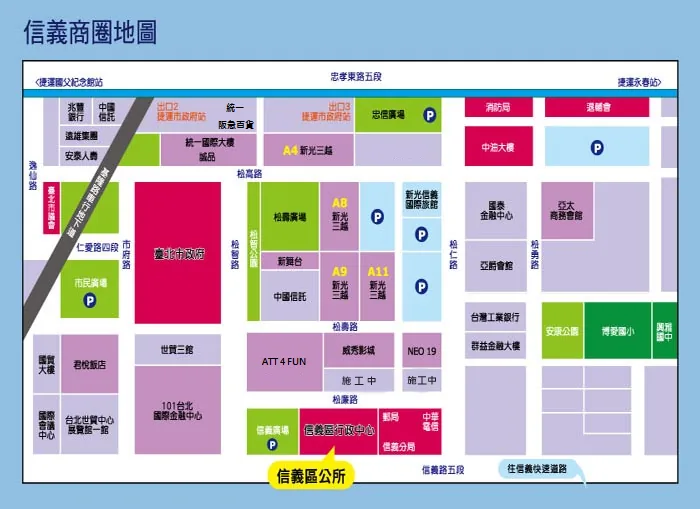
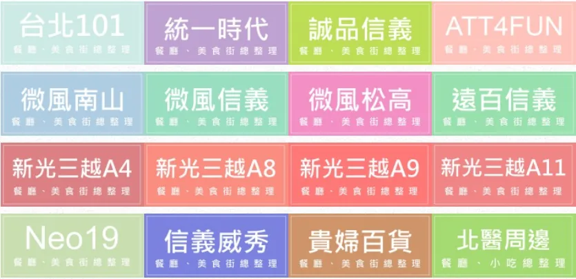
觀察：十幾家百貨、購物中心集中在同一區——這是「互斥力」還是「互吸力」？
| 調查地點 | 日期 | 星期 | 天氣 |
| 時間段 | 通行量 | 通行主體 | 備註 |
| 09:00–10:00 | 1. 通行者主體可概分： A：家庭主婦 B：職業婦女 C：上班族男性 D：工廠員工 E：學生（高中及以上） F：學生（高中以下） 2. 通行者主體之描述填上類別代號即可 | ||
| 10:00–11:00 | |||
| 11:00–12:00 | |||
| 12:00–13:00 | |||
| 13:00–14:00 | |||
| 14:00–15:00 | |||
| 15:00–16:00 | |||
| 16:00–17:00 | |||
| 17:00–18:00 | |||
| 18:00–19:00 | |||
| 19:00–20:00 | |||
| 20:00–21:00 | |||
| 21:00–22:00 | |||
| 合 計 |
| 調查地點 | 日期 | 星期 | 天氣 |
| 時間段 | 機車 | 小汽車 | 大汽車 |
| 09:00–10:00 | |||
| 10:00–11:00 | |||
| 11:00–12:00 | |||
| 12:00–13:00 | |||
| 13:00–14:00 | |||
| 14:00–15:00 | |||
| 15:00–16:00 | |||
| 16:00–17:00 | |||
| 17:00–18:00 | |||
| 18:00–19:00 | |||
| 19:00–20:00 | |||
| 20:00–21:00 | |||
| 21:00–22:00 | |||
| 合 計 |
兩張表都另附「流向圖」欄位與「調查人」簽名；下一頁有可以帶到現場的電子計數器。
討論：面寬影響招牌與店舖明顯度，縱深影響陳列與動線。不同業態（便利商店、服飾店、餐廳）答案會一樣嗎？
月亮與星星：大磁場吸引周邊小店
又稱三角理論：路口轉角的店位選擇
住宅區的人流像漏斗一樣，匯集到出口
大數法則：
成功／失敗法則
想一想：車子在路口前後，哪一個轉角最容易被看到、最方便停車進店？
住宅區的人要出門上班、回家，都得經過同一個出入口；這些人流像漏斗一樣匯集到幹道。店開在漏斗口、而且位在下班回家的那一側，就能接住整片住宅區的人潮。
前兩個看「城市／商店的吸引力」，後兩個看「新店能賣多少」。
由學者 William J. Reilly 在 1931 年所發展的理論：兩個城市相比，越大且越有吸引力的城市，將會吸引更多顧客上門。
以人口和距離為考量因素，兩城市吸引顧客的比例與當地的人口成正比，與距離的平方成反比。
1. 兩城市的零售店經營效率相似。
2. 兩城市的人口分佈相似。
| Dab | a 城市或 b 城市的商圈範圍 |
| d | a 城市和 b 城市的距離 |
| Pa | a 城市的人口 |
| Pb | b 城市的人口 |
假設 a 城市有 90,000 人口，b 城市有 10,000 人口，a、b 兩地距離 20 公里，對於 a 和 b 而言商圈範圍各是多少？
（Pa＝90,000，Pb＝10,000，d＝20 公里）
未考慮到交通流量，應以交通的時間距離衡量較為合適。
應以城市的零售額（Retail Sales Sum）取代之。
認為商店吸引顧客的能力取決於相對吸引力，包括產品特性與顧客到商店的距離。
| Pij | 在 i 地點的顧客會到 j 商店購物的機率 |
| Sj | j 零售店的規模 |
| Tij | 顧客從 i 地點到 j 商店購物之時間 |
| λ | 交通時間對消費者購物行為之影響 |
| n | 競爭店數 |
| 條件 | 舊商店 | 新 j 商店 |
|---|---|---|
| 規模 | 5,000 m² | 10,000 m² |
| a 社區開車時間 | 5 分鐘 | 15 分鐘 |
| b 社區開車時間 | 10 分鐘 | 5 分鐘 |
| 現有銷售額 | 每年 800 萬元：a 社區 300 萬、b 社區 500 萬 | |
| λ 值 | 2（根據過去經驗） | |
某城市有 A、B 兩大社區，目前有一家 8,000 m² 的舊 R 超市，年營業額 1,000 萬：600 萬來自 A 社區、400 萬來自 B 社區。A 社區居民開車到 R 平均 10 分鐘、B 社區 30 分鐘。
競爭對手考慮另開一間 10,000 m² 的新 Q 超市：A 社區開車到 Q 平均 30 分鐘、B 社區 15 分鐘；交通時間影響值 λ＝3。
請用 Huff 法則算出 A、B 社區居民到 Q 購物的機率，以及 Q 的預期營業額。
利用迴歸分析法中複迴歸的技術，衡量預測新商店的銷售額。
一間商店已經分析了所有可能會影響現有商店銷售額的因素，得出各因素的權數，預期商品銷售額的計算方式如下：
| 考慮因素 | 立地 A | 立地 B |
|---|---|---|
| 車程在 15 分鐘內的家庭戶數 | 10,000 | 13,000 |
| 有未滿 15 歲子女的家庭比例 | 60% | 20% |
| 有抱負青年的家庭比例 | 50% | 10% |
| 從街道上能清楚看到商店 | 是 | 否 |
| 商店裡面有專業的服務人員 | 是 | 否 |
流量與
入店率調查
立地條件
比較
客層分析
服務水準
營業額推估
還記得「來客數三槓桿」嗎？競合店的流量 × 入店率 × 成交率 × 客單價，就是推估它營業額的起點。
營業額到達 BEP，收入剛好打平所有費用；超過的部分才是利潤。
| 第一年 | 第二年 | 第三年 | 第四年 | 第五年 | |
| 營業額 | |||||
| 毛利率 | |||||
| 毛利額 | |||||
| 銷管費用 | |||||
| 人事費 | |||||
| 水電費 | |||||
| 租金 | |||||
| 折舊 | |||||
| 促銷 | |||||
| 修繕 | |||||
| 其他 | |||||
| 營業利益 | |||||
| 營業外收支 | |||||
| 經營損益 | |||||
| 累計損益 | |||||
| 損益平衡點（BEP） | |||||
| 投資報酬率 |
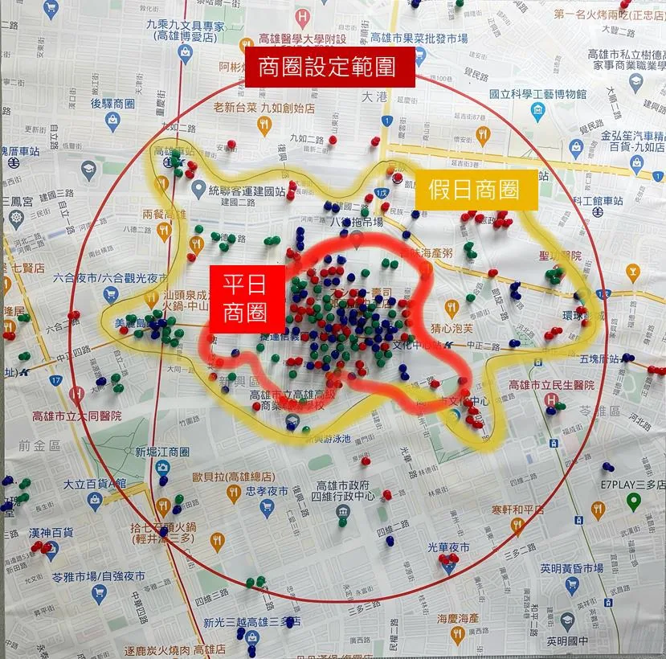
把來店顧客的住址一一插在地圖上，就能看出真正的商圈長什麼樣子。
| 開幕前 | 開幕後 | ||||
| 市佔率（m/s） | 交易客數 | 市佔率（m/s） | 交易客數 | ||
| 計畫店 | |||||
| 競合店 | A | ||||
| B | |||||
| C | |||||
| D | |||||
| E | |||||
| 合計 | 100% | 100% | |||
比較開幕前的推估與開幕後的實際，找出估錯的地方（商圈範圍？入店率？競合店反應？），下一次展店就會估得更準。
零售業隨著店數擴大，需要開始思考物流配送問題，以維持營運穩定。主要原因如下：
零售業態具有採取連鎖店經營方式的經營特質。
物流中心（Distribution Center；DC）於採連鎖店經營的流通業中佔有策略性地位。
想像一家新開的連鎖咖啡店，從家鄉一路開到海外。不看上一頁，你能排出它的物流配置順序嗎？
成立 DC 通常需要投資大量資金，而連鎖零售業卻還是想要投資設立 DC，主要有三項動機：
大型連鎖流通業以「大量店舖網」展現出的雄厚「大量銷售力」為後盾，再利用其大量商品採購的「購買力」為籌碼，得以和商品供應商進行討價還價，降低商品進貨成本。
流通業擁有了 DC 以後，可以對連鎖系統內各加盟店穩定提供所需商品，統籌管理各加盟店商品庫存量與供給必需品。
通路末端的大型連鎖流通業因擴大對物流活動掌控權，將強化它在通路上的地位。不需再依賴製造業者、批發業者提供商品配送服務，可自己決定商品零售價格政策、商品流通政策。
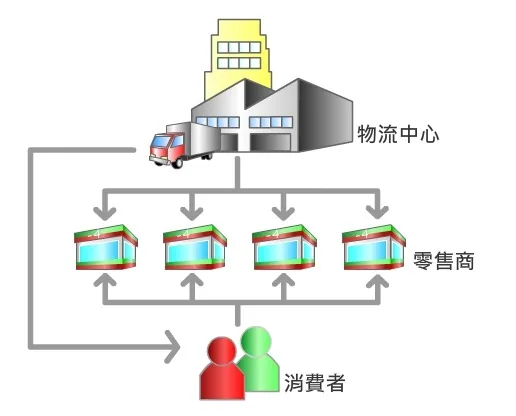
| 類別 | 功能 | 舉例 |
|---|---|---|
| 製造商物流中心 | 由製造商為了確保商品通路，並提高銷售物流效率，向下整合所成立的物流中心。 | 統一企業 |
| 批發商物流中心 | 由批發商或代理商為同時掌握商流與物流所成立的物流中心。 | 德記 CDS（Contract Distribution Service，全方位物流服務）物流中心 |
| 貨運業者物流中心 | 由貨運公司藉由本身具有車隊的優勢所成立的物流中心。 | 新竹貨運、大榮貨運 |
| 零售商物流中心 | 由零售商為因應多變的消費需求，減少流通通路以及增加商品議價空間，向上整合所成立的物流中心。 | 全家便利商店成立的全台物流中心 |
| 區域物流中心 | 負責處理需開箱揀取少量商品的訂單，揀取完後利用交通較為順暢的時段運送到前端型物流中心（Frontier Distribution Center；FDC）。 | 日茂物流 |
| 邊境物流中心 | 貨品暫時存放的轉運站，或要配送貨品到國外中繼站。 |
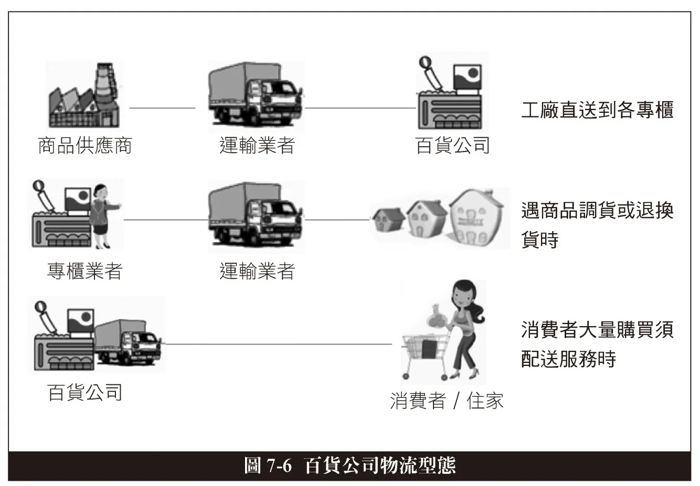
商品供應商透過運輸業者直送到百貨公司；遇到商品調貨或退換貨時，專櫃業者將商品退回工廠。
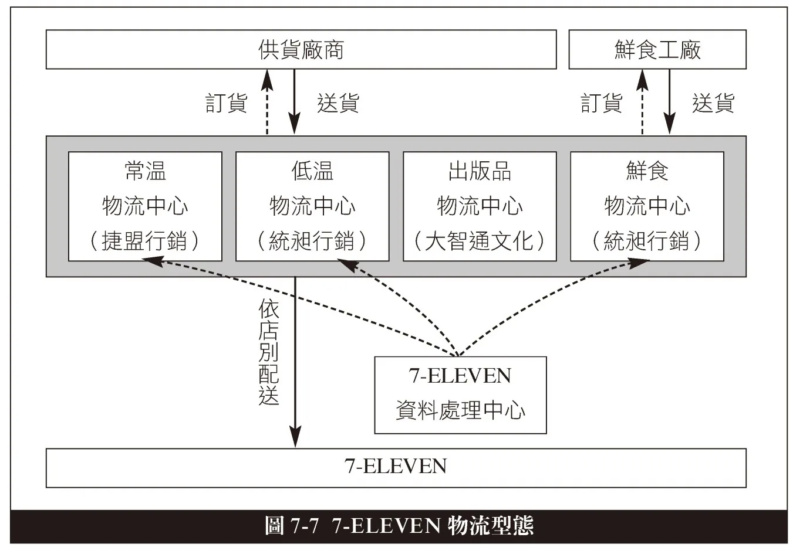
7-ELEVEN 透過資料處理中心通知不同的配合廠商提供物流配送：常溫、低溫、出版品、鮮食各有物流中心，依店別配送。
全聯超市的第三方物流（Third Party Logistics，3PL，簡稱夥伴關係）。
原始供應商或者總代理每個月與全聯福利中心總公司協商銷售策略，擬定方案之後交由各地區的代理商執行基本的物流配送作業；供應商依照各賣場的銷售業績做銷售收款，並依各賣場實際的銷售數字給代理商佣金。
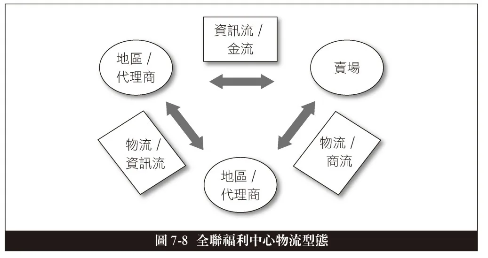
相對於其他連鎖業態，量販店由於其供應商眾多，因此商品的「集貨」功能更顯得重要。
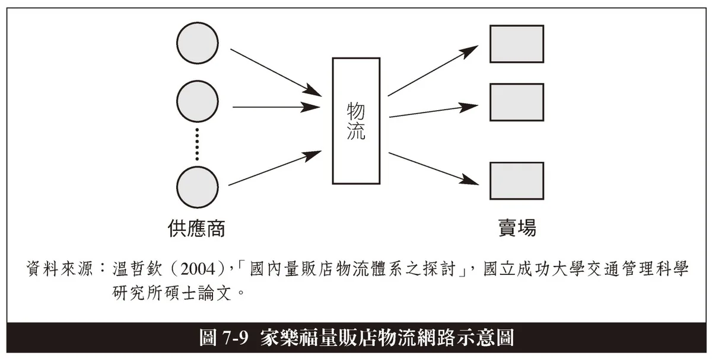
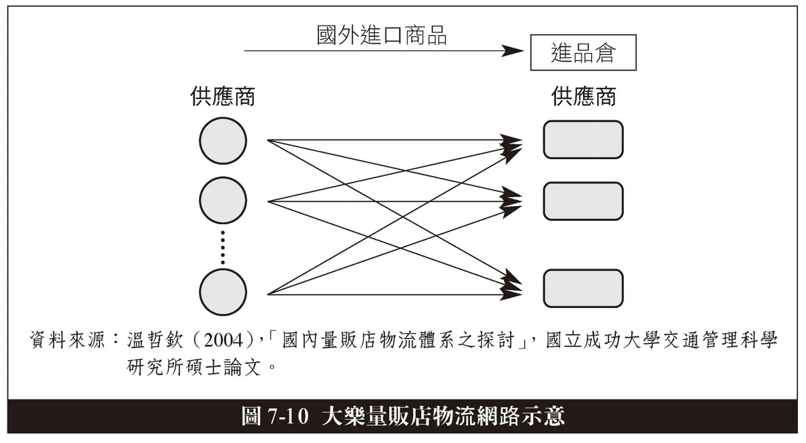
資料來源：溫哲欽（2004），〈國內量販店物流體系之探討〉，國立成功大學交通管理科學研究所碩士論文。
臺灣目前便利商店的密集程度居全球之冠，便利商店也於 1999 年推出線上購物超商取貨的服務，主要分為三大服務：
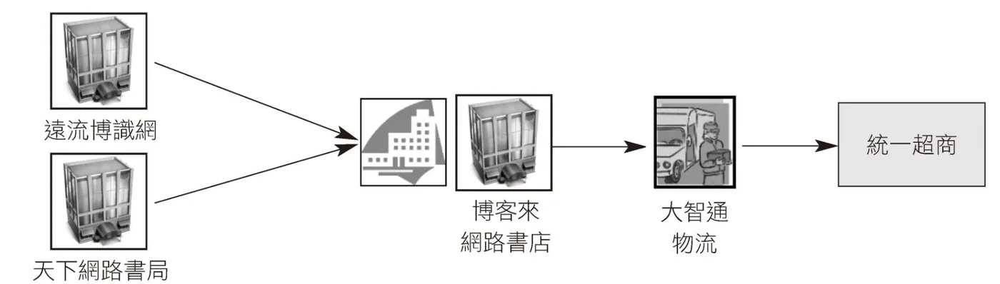
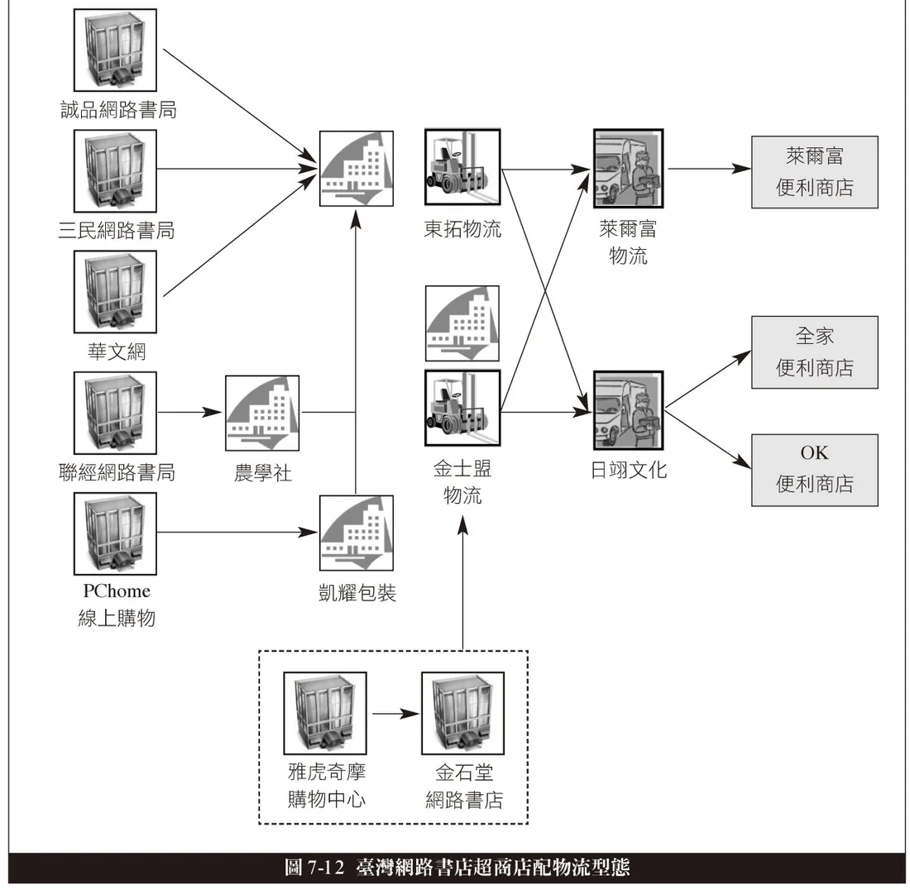
為開店找地點
租金率而非租金
三層商圈
來客數＝流量×入店×成交
飽和度 IRS
紀錄表、流量調查
Reilly、Huff
迴歸、類比
BEP、五年損益
開店後驗證
DC 三動機
五種業態物流
好的立地讓客人走得進來，好的物流讓商品一直都在。
回到開場的投票：學完之後，你還會選同一個地點嗎？
點這張卡片回到第 3 頁 ›
勾選紀錄只存在你這台裝置上，方便下次打開接著做。
| → ↓ 空白鍵 PageDown | 下一頁 |
| ← ↑ PageUp | 上一頁 |
| 數字＋Enter | 跳到指定頁（互動頁的數字鍵用於作答／投票） |
| O | 總覽全部頁面 |
| F | 全螢幕 |
| B | 開關背景散景與氣泡 |
| 點圖片 | 放大檢視（有放大鏡游標的圖） |
| 手機 | 左右滑動或用底部按鈕翻頁 |